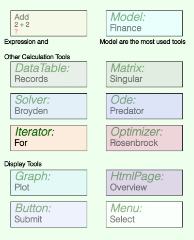

The built in calculation tools are listed below. To see the help page for a tool, just tap on its name.
5 km
and an expression named speed has the formula:
distance / 180 s
then speed's value will be 27.78 m/s or 100 kph.
f(x) = 0
for one or more values of x. That is it attempts to come up with a set of x values such that all the function values are 0.
All Math Minion sessions have at least one root model, but models can contain other models, so a hierarchy of different models can be constructed.
dy/dt = f(y, t)
given an initial value for y, which can be a scalar, array or matrix.
y = f(x)
where y is a scalar and x can be a scalar or an array, the optimizer attempts to come up with the set of x values that produces the smallest value of y.
To add a tool to the model, tap on the diagram background where you wish the upper left hand of the tool's icon to be placed.
Select Add Tool to Model from the resulting menu and then select the type of tool you wish from the list presented.
Tools are all represented on the diagram as rectangular icons, with connections being made from the corners of an icon to the middle of a vertical side of all the tools that reference it.
Each type of tool icon has a unique color and all except the expression icon have labels for the tool type and the tool's name. The expression icon, has labels for the tool's name, formula (truncated as necessary) and calculated value. Note the value won't be calculated until the tool is selected or a tool that depends on its value is selected.
